Jackson rep day, batch 1 (10-22)
Walked Today, Storms, CRM inbox, pipeline, calendar, home record, proposal, storm report and Nimbus as a rep; a home moved New hit, Contacted, Sent to Chris, Inspection booked, Proposal, Won with no errors.
Pipeline (desktop)
Was a blank page: the board's pane never switched on.

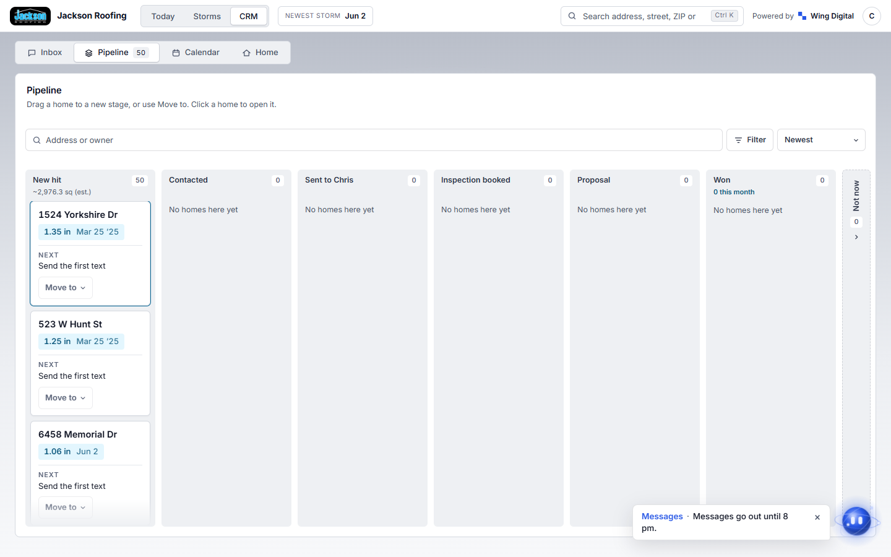
Pipeline (phone)
Works at phone width.

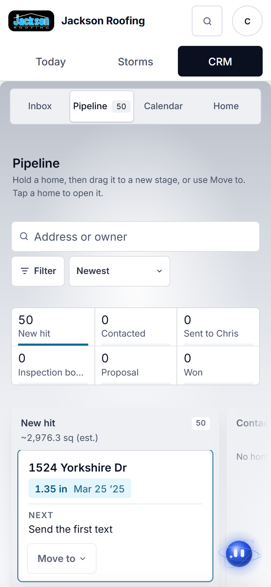
Proposal
Was 'Your roof, measured' with a guessed outline drawing, 12 sections and a pitch that disagreed with the record. Now: price per square x squares, every figure labelled a LiDAR estimate, drawing only when the model passed its checks.

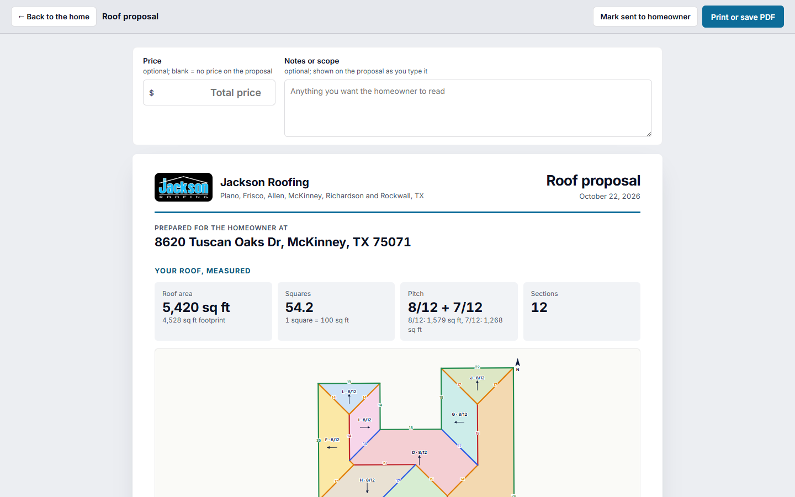

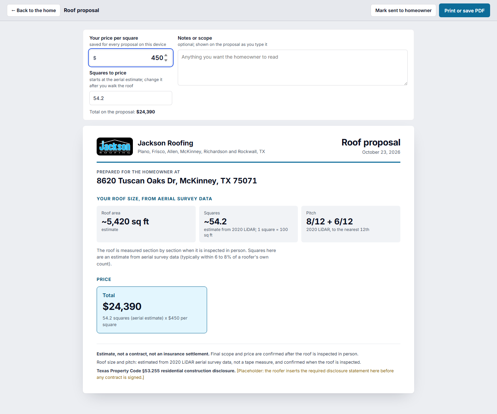
Proposal, printed
What the homeowner gets.

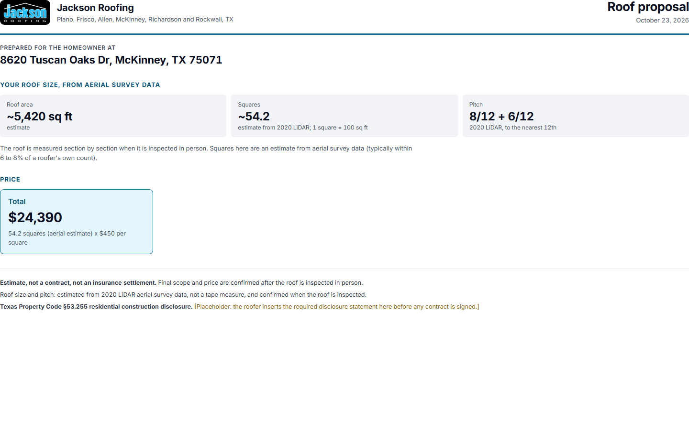
Proposal, model passed
A home whose 3D model passed every gate keeps its drawing, sections and edges.

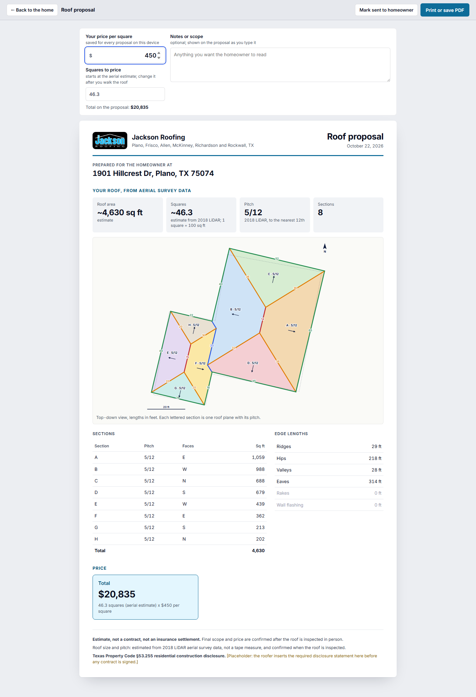
Today
Was '47 sq measured' and a fake (972) 555-0100 phone. Now '~47 sq, LiDAR est., shape being checked', no invented phone.

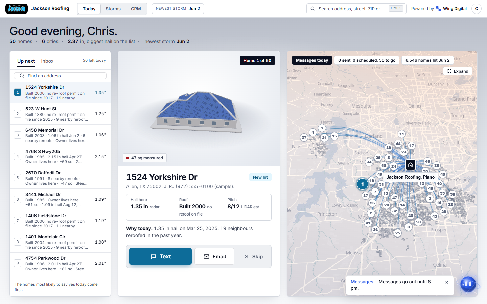

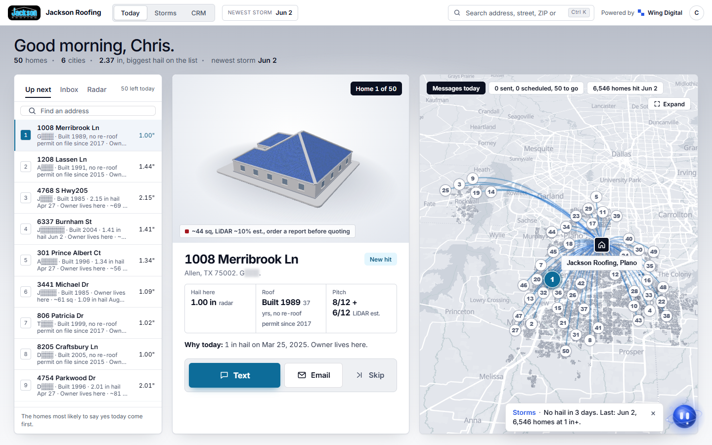
Today (phone)

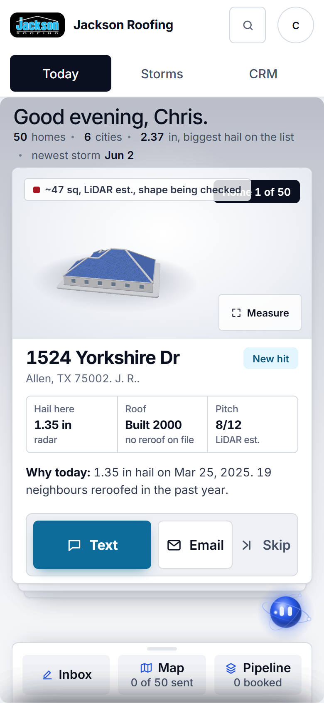
Add phone, then Text
Rep adds the number the homeowner gave; Text opens Messages with the draft.

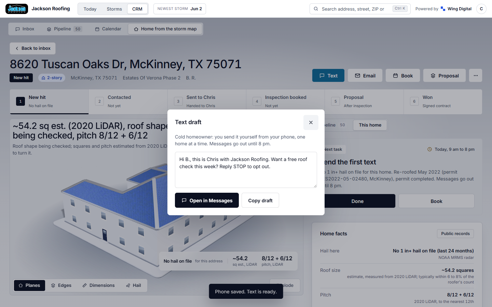
Home record (phone)

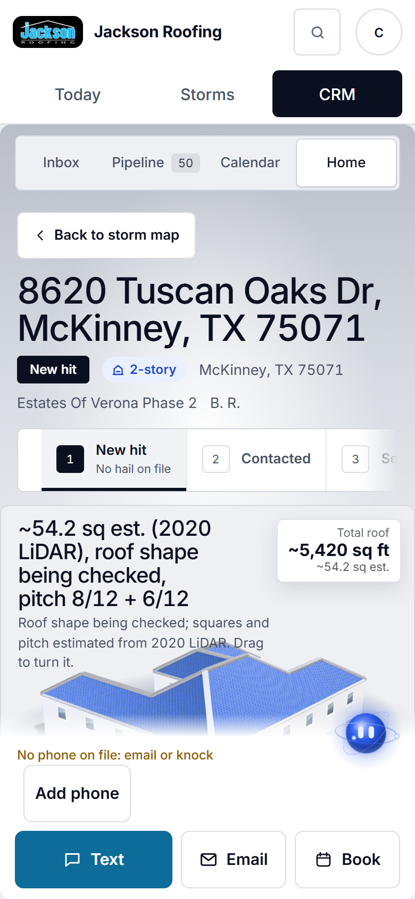